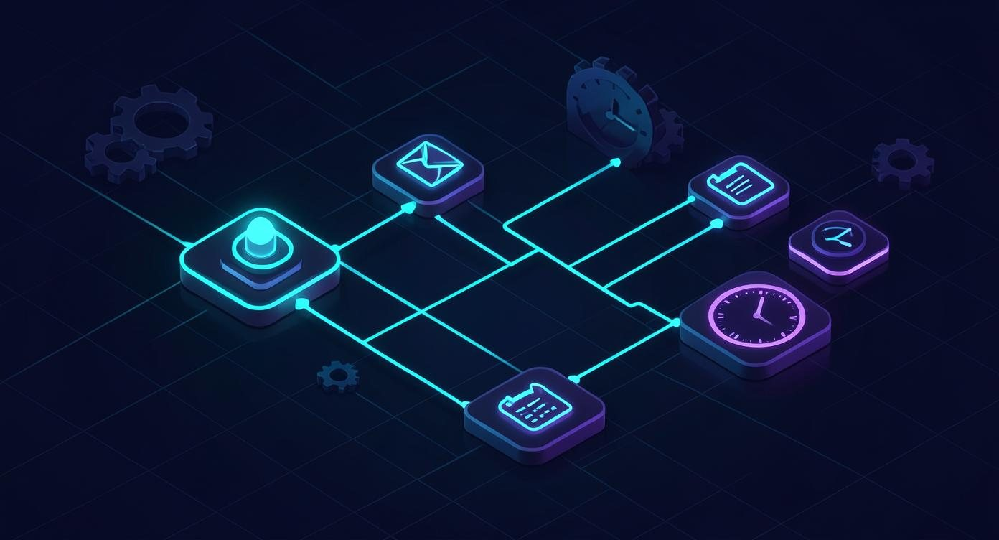
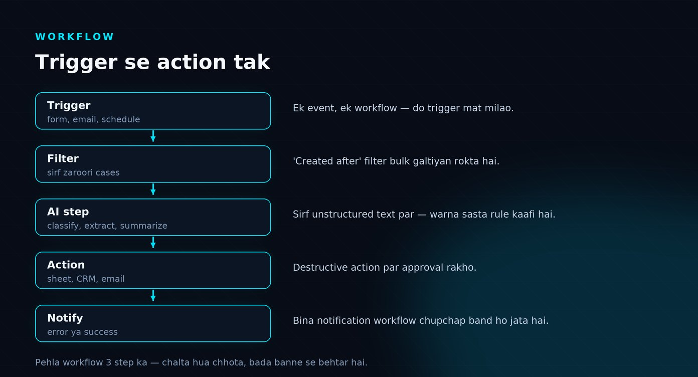
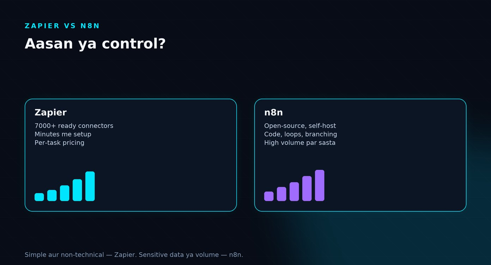

AI Automation: Zapier aur n8n se Roz ke Kaam Aasan Guide

Roz subah 20 minute ek hi kaam me jaate hain: form ka response copy karna, sheet me paste karna, client ko email bhejna, aur CRM me note lagana. Koi bhi isse “kaam” nahi kehta, par yeh 20 minute mahine ke 7 ghante hain. Automation ka poora point yahi hai — chhote, boring, dohrane wale kaam ko ek baar set karke bhool jana.
Is guide me main AI automation ka practical side dikhaunga: Zapier aur n8n me farq, trigger-action kaise socho, paanch workflows jo aaj hi bana sakte hain, AI step kahan lagana chahiye aur kahan bilkul nahi, error handling, cost aur safety. Saath me apna anubhav — ek workflow jisne mahine me 6 ghante bachaye, aur ek jisne galti se 300 customers ko galat email bhej di.
Chhota jawab: Automation do hisson ka hota hai — trigger (kuch hua) aur action (kuch karo). Zapier ready-made connectors ke saath sabse aasan hai aur non-technical team ke liye best; n8n open-source hai, apne server par chal sakta hai, zyada control deta hai aur high volume par sasta padta hai. AI step ko beech me rakho — classify, summarize, extract — par hamesha aisa workflow banao jisme fail hone par insaan ko pata chale.
Automation ka mental model — trigger, action, filter
Har automation teen cheezon se banta hai. Trigger woh event hai jo workflow shuru karta hai — naya form response, naya email, schedule (har subah 9 baje), ya webhook. Action woh kaam hai jo hota hai — sheet me row, email, Slack message, CRM update. Aur filter woh shart hai jo beech me lagti hai — “sirf tab chalao jab amount 10,000 se zyada ho”.
Naye log pehla workflow bahut bada banate hain: 12 step, 4 apps, 3 conditions. Woh pehle hafte me kahin na kahin fail hota hai aur poora band ho jata hai. Mera niyam: pehla workflow 3 step ka. Trigger, ek action, ek notification. Jab woh 2 hafte chal jaye, tab step jodo. Ek chhota workflow jo chal raha hai, bade workflow se behtar hai jo kabhi kabhi chalta hai.

Ek cheez jo shuru me hi socho: idempotency. Matlab agar trigger do baar aa jaye, to action do baar na ho. Form tools kabhi kabhi duplicate webhook bhejte hain, aur bina check ke aapka workflow do email bhej dega. Har workflow me ek “already processed?” check rakho — sheet me ID, ya database me unique key.
Zapier vs n8n — kaun kiske liye
Yeh sawaal har automation discussion me aata hai aur jawab simple hai: team aur volume par depend karta hai. Dono achhe hain, par alag problem solve karte hain.

Zapier me 7,000+ apps ke ready connectors hain, setup minutes me hota hai, aur non-technical log khud bana lete hain. Keemat: per-task pricing, isliye volume badhne par bill tez badhta hai, aur complex logic (loops, branching) me hadd aa jati hai. Chhoti team, 500–2,000 tasks/mahina, aur speed chahiye — Zapier.
n8n open-source hai, self-host ho sakta hai (Docker se), aur usme code node, loops, branching aur custom API calls sab free hain. Keemat: setup aur maintenance aapka, aur non-technical logon ke liye seekhna padta hai. Agar aapke paas developer hai, data sensitive hai, ya 10,000+ tasks/mahina hain — n8n sasta aur zyada flexible padta hai.
Mera mix: client-facing, simple workflows Zapier par (kyunki client khud dekh sakta hai), aur internal heavy workflows n8n par. Dono ko ek saath rakhna theek hai — bas har workflow ka owner ek hona chahiye, warna duplicate automation chalne lagte hain.
Paanch workflows jo aaj hi bana sakte hain
Yeh paanch woh workflows hain jo maine sabse pehle banaye aur jo aaj bhi chal rahe hain. Har ek 3–5 step ka hai, aur har ek me ek clear fayda hai.
- Form → Sheet → WhatsApp/Email. Naya lead form bhare, row sheet me jaye, aur aapko ek message aaye. 10 minute ka setup, roz 10 minute bachata hai.
- Invoice email → Drive + Sheet. Supplier ka invoice email aaye, attachment Drive ke folder me save ho, aur sheet me date, amount aur vendor ka row ban jaye. AI step yahan PDF se amount aur date nikalta hai.
- Support email → classify → route. Naya email aaye, AI use “billing / delivery / product” me classify kare, aur sahi label ke saath CRM me daale. Human ko sirf review karna hai.
- Meeting notes → action items. Transcript aaye, AI se decisions aur action items nikaalo, aur unhe task tool me cards ke roop me bhejo.
- Roz ka digest. Har subah 9 baje, pichhle din ke leads, orders aur support tickets ka summary email. Yeh sabse simple aur sabse zyada pasand aane wala workflow hai.
In paanch me se koi bhi “AI” ke bina bhi ban sakta hai. AI sirf un jagah lagta hai jahan text samajhna ho — invoice se amount, email ka category, meeting ka action item. Yeh distinction important hai, kyunki log AI ko har jagah daal dete hain aur workflow slow, mehnga aur kam reliable ho jata hai.
AI step kahan lagayein — aur kahan nahi
AI step ka fayda tab hota hai jab input unstructured ho — email ka text, PDF, chat message, audio transcript. Jahan data pehle se structured hai (form ke fields, sheet ke columns), wahan AI ki zaroorat nahi; seedha mapping karo. Yeh rule lagane se mera average workflow cost aadha ho gaya.
System: Tum ek invoice parser ho. Diye gaye text se sirf yeh
fields nikalo aur JSON me do:
{"vendor": "", "invoice_no": "", "date": "YYYY-MM-DD",
"amount": 0, "currency": "INR"}
Agar koi field nahi mili to null rakho. Kuch aur mat likho.
User: [PDF se nikala hua text]AI step ke baad hamesha ek validation step rakho. JSON parse hua? amount number hai? date valid hai? Agar nahi, to workflow ko rukna chahiye aur aapko message jana chahiye — galat data ke saath aage badhna sabse khatarnak hai. Maine ek baar amount null ke saath invoice Drive me save kar diya tha, aur accounts team ko hafte baad pata chala.
Ek aur baat: AI ka output deterministic nahi hota. Same email do baar bhejo to category kabhi badal sakti hai. Isliye jahan exact match chahiye (jaise GST number, invoice number), wahan regex ya lookup table use karo, AI nahi. AI ko sirf wahan lagao jahan “lagbhag sahi” kaafi ho, aur insaan review kar le.
Error handling — asli farq yahan banta hai
Demo me har workflow chalta hai. Production me woh fail hota hai: API down, rate limit, file bada, field missing. Jo workflow fail hone par chupchap band ho jaye, woh automation nahi, woh naya problem hai — kyunki aapko pata bhi nahi chalega.
Teen cheezein har workflow me daalo. Pehli — error notification. Zapier aur n8n dono me “error par email/Slack” ka option hai; woh on karo. Doosri — retry with backoff. Temporary failure par 3 baar retry, badhte delay ke saath. n8n me yeh built-in hai; Zapier me “autoreplay” paid plans me. Teesri — dead letter. Jo item fail ho, usse ek sheet ya folder me daal do, taaki baad me haath se process ho sake.
Aur ek aadat jo sabse zyada bachati hai: pehle 3 din manual check. Naya workflow chalu karne ke baad 3 din tak har run ka output dekho. 90% galtiyan pehle 20 runs me hi pakdi jaati hain, aur unhe theek karna tab sasta hota hai. Uske baad weekly ek nazar daalo.
Cost, limits aur scale
Automation ka cost teen jagah se aata hai: platform ka plan (per task ya per execution), AI step ke tokens, aur aapka samay (maintenance). Pehla sabse visible hai, teesra sabse mehnga. Ek workflow jo mahine me 4 ghante bachata hai par 3 ghante maintenance khaata hai, woh faydemand nahi hai.
Volume ka hisaab karo. 1,000 tasks/mahina ka Zapier plan aaj kuch dollar ka hai, par 10,000 tasks par woh kai guna ho jata hai. AI step har task par chalta ho to tokens bhi jodo — ek chhota classification 100–200 tokens ka hota hai, par 20,000 runs par yeh number matter karta hai. Simple rules (contains, equals) pehle lagao, AI sirf un cases par jahan rule fail ho. Isse cost 60–80% tak kam hoti hai.
Rate limits bhi jaan lo: Gmail, Sheets aur WhatsApp API sab par per-minute limits hain. Bulk me 500 emails ek second me bhejne ki koshish karoge to API block kar dega. Batch me chalao, 1–2 second ka delay rakho, aur exponential backoff lagao.
Safety — automation ki asli khatra
Automation ka sabse bada risk yeh hai ki woh tez hai. Ek galat workflow 10 minute me 300 logon ko galat email bhej sakta hai. Isliye do rules: destructive actions par approval, aur dry run pehle.
Destructive action ka matlab — email bhejna, payment, delete, CRM me status badalna. Aise steps se pehle ek approval step rakho (Slack par “Approve” button, ya ek draft folder jisme email pehle jaye). Initial 2 hafte aise hi chalao, phir jab bharosa ban jaye tab auto karo. Yeh “slow” lagta hai, par ek galat bulk email se hamesha tez hai.
Dry run ka matlab: workflow ko aise mode me chalao jisme action na ho, sirf log ho. n8n me “pin data” se, Zapier me test mode se. Pehle 10 test items par dekho ki har field sahi map ho rahi hai — khaas kar email address aur naam. “Hi {{name}}” me name khaali aaya to email “Hi ,” ban jayega.
Mera anubhav
Sabse pehla workflow maine ek chhote export business ke liye banaya — website form se lead aaye, Google Sheet me jaye, aur owner ko WhatsApp par message aaye. 3 step, 15 minute ka setup. Usne roz ka 20 minute bacha diya, aur 3 mahine me 4,000+ leads capture hue bina koi miss. Woh aaj bhi chalta hai. Iska raaz yeh tha ki woh bahut chhota tha.
Doosra workflow woh tha jisne sabak sikhaya. Humne ek “naye customer ko welcome email” ka automation banaya — sheet me naya row aaye to email jaye. Test ke waqt sheet me 3 rows thi. Live karne ke baad pata chala ki sheet me purane 300 customers ka data pehle se tha, aur workflow ne sabko welcome email bhej diya. Kuch logon ne reply kiya “main 2 saal se customer hoon.” Sharmindagi hui, par us din ke baad maine rule bana liya: har trigger par ek “created after” filter, aur bulk actions se pehle dry run. Aaj main naya workflow 10 dummy items par chalata hoon, phir 1 real item par, phir live.
Teesri sikh maintenance ki thi. Maine 12 workflows bana diye the aur unka record kahin nahi tha — kaun sa kya karta hai, kaun owner hai, kaunse API keys use hoti hain. 6 mahine baad ek workflow fail hua aur mujhe 2 ghante lag gaye samajhne me ki woh kya karta tha. Ab main ek simple sheet rakhta hoon: workflow ka naam, trigger, action, owner, aur last checked date. 5 minute ki yeh sheet do ghante bachati hai.
Nateeja
Automation trigger, filter aur action ka jod hai; AI ek optional step hai jo unstructured text ko structured banata hai. Zapier aasan aur fast hai, n8n control aur scale deta hai. Pehla workflow 3 step ka banao, error notification aur retry lagao, destructive actions par approval rakho, aur naya workflow pehle dry run karo. Cost ka asli hissa maintenance hai — isliye kam workflows, saaf naam aur ek register rakho.
Aaj ka chhota kaam: apne pichhle hafte ke kaam me ek aisa task dhoondho jo roz dohrata hai aur jisme 10 minute lagte hain. Uska trigger aur action likho, aur kisi bhi free plan par 3 step ka workflow bana kar test karo. Ek workflow jo chal raha hai, das ideas se behtar hai.
Aage padhein: AI chatbot guide — jab automation ko customer se baat karni ho; aur pandas + LLM analysis — jab workflow ka output report me badalna ho.
अक्सर पूछे जाने वाले सवाल
Zapier aur n8n me shuruat ke liye kaun better hai?
Non-technical team aur simple workflows ke liye Zapier. Developer, sensitive data ya high volume ho to n8n — open-source, self-hosted aur sasta padta hai.
Kya automation ke liye coding chahiye?
Zapier me nahi, n8n me basic bhi nahi — par code node se complex kaam aasan ho jate hain. AI step ke liye prompt likhna aana chahiye, coding nahi.
AI step har workflow me lagana chahiye?
Nahi. Structured data (form fields, sheet columns) par seedha mapping karo. AI sirf wahan lagao jahan email, PDF ya chat ka text samajhna ho — warna cost aur failure badhte hain.
Automation fail ho jaye to pata kaise chalega?
Error notification on karo (email/Slack), retry with backoff lagao, aur failed items ko ek sheet me daalo. Bina notification wala workflow chupchap band ho jata hai.
Kya automation se account block ho sakta hai?
Rate limit aur spam policy todne par haan. Bulk emails batch me bhejo, delay rakho, aur platform ke terms follow karo — khaas kar WhatsApp aur Gmail API ke.